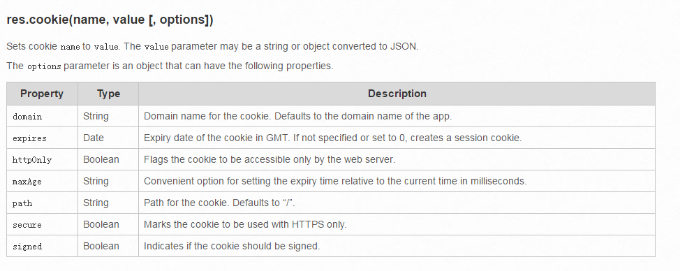

HTTP是无连接的，就是说你访问一个网站的1.html，然后访问同一个网站的2.html，这是两次链接。你访问2.html的时候，简单的说，服务器是不可能知道你访问过1.html的。
当你访问1.html的时候，服务器在下行HTTP response报文头中携带k-v对儿，然后今后每次你发出HTTP的时候，在上行的request报文头中都写明这个k-v对儿。那么2.html页面能够检测这个k-v对儿，实现信息记录的需求。k-v对儿就是Cookie。
在Node.js中使用Cookie，很简单，我们首先要安装 npm install cookie-parser
先要在res.cookie中设置一个下行的k-v
第一次http请求 res中的字段：
今后所有req的字段：
Cookie非常好用，可以把数组发下去，然后之后收到的cookie都是数组，不变形。虽然cookie使用纯文本k=v形式传输的。
Cookie是明文传输的，所以敏感信息不能通过Cookie保存。Cookie可以被更改，可以用来黑客攻击。
在Node.js中使用Cookie，要先设置中间件：
SESSION依赖于cookie。我们发现cookie能够被篡改，比如你登陆成功写了一个login=1。但是你没有登录成功，能够用软件改cookie，让上行请求带着login=1上去，服务器认为你登陆成功了。
SESSION表示会话，是一个鬼点子：你登陆成功之后，服务器给你一个cookie，但是这个cookie是随机乱码，比如user=4309cxig0drlgjlknal; 然后每次你访问这个服务器就会带着这个乱码上去，服务器把这个乱码和自己内存中保存的数据比对，来识别谁是谁。
express中需要借助express-session这个npm包来实现session：
https://www.npmjs.com/package/express-session
SESSION 是一个乱码：
当你登陆成功的时候，服务器让你带一个加密后的乱码下去，同时服务器上的内存记录了这个乱码和你的对应关系。
每次访问这个服务器的时候，都会带着这个乱码上去，服务器识别这个乱码我认不认识。